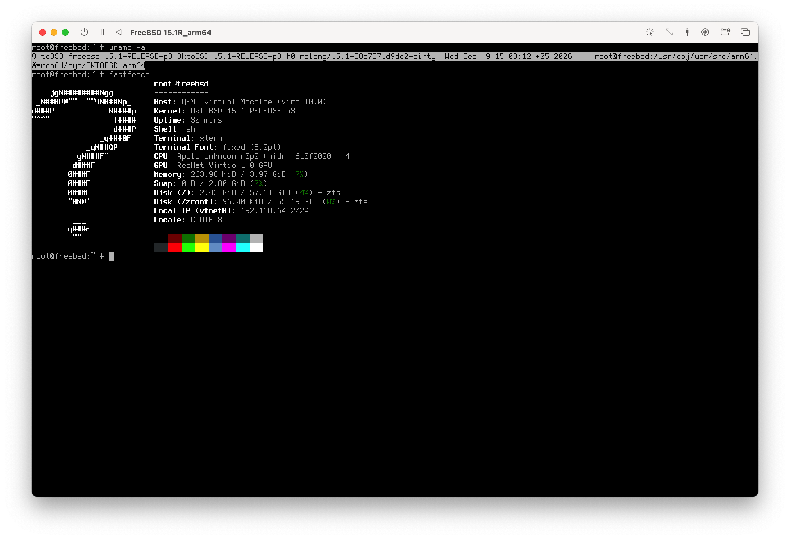

Experience the Power of FreeBSD.
Optimized for Multithreading.
OktoBSD is a modified version of FreeBSD 15 that features manual optimizations of the kernel and key components. The AMD64 architecture has been optimized for working with small files within ZFS file systems, and ARM64 now runs natively on Apple Silicon computers!

A university project with great potential!
We’ve drawn on the best of the UNIX experience. Inspired by macOS—which, for a quarter of a century, has been the purest form of UNIX available—we’re setting the bar to bring UNIX back to the finest workstations and servers, offering a powerful platform and graphics capabilities.
Easy to install!
The system uses automatic hardware detection to install only the necessary drivers and installs the GPU drivers that are compatible with your graphics card.
Isolation via Jails
Deploy isolated environments and microservices without the overhead of traditional virtualization, directly from the built-in container manager.
ZFS Optimization
ZFS has earned its place in this system, because by analyzing the source code, we were able to boost the performance of SSD/NVMe drives by 20% by removing unnecessary operations typical of hard drives!
pkg+ Package Manager
Instant access to tens of thousands of FreeBSD ports with precompiled, optimized binary packages.
Kernel Security
Uses Capsicum, audits default configurations, and minimizes the attack surface in the base installation.
Easy Configuration
Convenient command-line utilities for configuring network, audio, and video adapters without having to manually edit complex rc files.
Explore the kernel source code
The OktoBSD kernel tree is open for contributions, testing, and independent compilation.